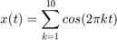
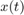
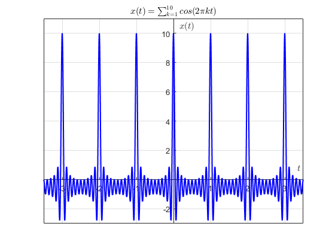
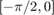
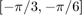
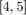
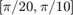
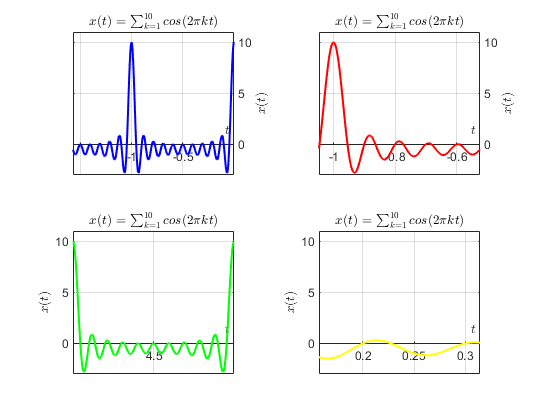

Sección 4
Construye la grafica de

para cuatro rangos (figura 2x2). Los ejes deben mostrarse en el origen además de la edición de su preferencia.
El código para obtener la grafica de  es el siguiente
x=0; t= linspace(-2*pi,2*pi,4001); for i = 1:1:10 x=x+cos(2*pi*i*t); end plot(t,x,'b','linewidth',1.5) plano = gca; plano.XAxisLocation = "origin"; plano.YAxisLocation = "origin"; grid on axis([-3.5 3.5 -3 11]) xlabel('${t}$','interpreter','latex') ylabel('$x(t)$','interpreter','latex') title('$x(t)=\sum_{k=1}^{10}cos(2{\pi}kt)$','interpreter','latex')
Los rangos elegidos para graficar cada figura respectivamente son:
- 
- 
- 
- 
%Rango 1 subplot(2,2,1) plot(t,x,'b','linewidth',1.5) plano = gca; plano.XAxisLocation = "origin"; plano.YAxisLocation = "origin"; grid on axis([-pi/2 0 -3 11]) xlabel('${t}$','interpreter','latex') ylabel('$x(t)$','interpreter','latex') title('$x(t)=\sum_{k=1}^{10}cos(2{\pi}kt)$','interpreter','latex') %Rango 2 subplot(2,2,2) plot(t,x,'r','linewidth',1.5) plano = gca; plano.XAxisLocation = "origin"; plano.YAxisLocation = "origin"; grid on axis([-pi/3 -pi/6 -3 11]) xlabel('${t}$','interpreter','latex') ylabel('$x(t)$','interpreter','latex') title('$x(t)=\sum_{k=1}^{10}cos(2{\pi}kt)$','interpreter','latex') %Rango 3 subplot(2,2,3) plot(t,x,'g','linewidth',1.5) plano = gca; plano.XAxisLocation = "origin"; plano.YAxisLocation = "origin"; grid on axis([4 5 -3 11]) xlabel('${t}$','interpreter','latex') ylabel('$x(t)$','interpreter','latex') title('$x(t)=\sum_{k=1}^{10}cos(2{\pi}kt)$','interpreter','latex') %Rango 4 subplot(2,2,4) plot(t,x,'y','linewidth',1.5) plano = gca; plano.XAxisLocation = "origin"; plano.YAxisLocation = "origin"; grid on axis([pi/20 pi/10 -3 11]) xlabel('${t}$','interpreter','latex') ylabel('$x(t)$','interpreter','latex') title('$x(t)=\sum_{k=1}^{10}cos(2{\pi}kt)$','interpreter','latex')